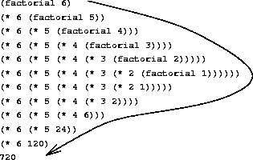
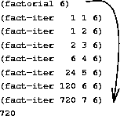

Akkumulierende Parameter
Einführung in die Programmierung
Rekursive und iterative Prozesse
Fakultät rekursiv
Ausgehend von der mathematischen Definition:
\[n! = n \cdot (n-1) \cdot (n-2) \cdot\cdot\cdot 2 \cdot 1 = n\cdot (n-1)!\] kann folgende rekursive Funktionsdefinition gegeben werden:
(define factorial (lambda [n] (cond [(= n 1) 1] [else (* n (factorial (- n 1)))])))
Die Anwendung (factorial 6) führt zu folgendem rekursiven
Abarbeitungsprozess:
rekursive Abarbeitung der Fakultät

Fakultät iterativ
\(n! = 1 \cdot 2 \cdot\cdot\cdot (n-1) \cdot n\)
Berechnung der Fakultät im Vorwärtsgang mit zwei Hilfsvariablen:
product \(\leftarrow\) product * counter
counter \(\leftarrow\) counter + 1
product ist gleich \(n!\), wenn counter größer als \(n\) ist.
(define factorial (lambda [n] (fact-iter 1 1 n))) (define fact-iter (lambda [product counter max-counter] (cond [(> counter max-counter) product] [else (fact-iter (* product counter) (+ counter 1) max-counter)])))
iterative Abarbeitung der Fakultät

Fakultät iterativ mit lokaler Hilfsfunktion
- Die Funktion
fact-iterhat reinen Hilfscharakter, d.h. sollte nur vonfactorialaufgerufen werden. Konsequenz: Funktion
fact-iterlokal definieren:(define factorial (lambda [n] (letrec ([fact-iter (lambda [product counter] (cond [(> counter n) product] [else (fact-iter (* product counter) (+ counter 1))]))]) (fact-iter 1 1))))
- Das dritte Argument für
fact-iterist überflüssig geworden.
Akkumulierende Parameter
- Ein rekursiver Prozess ist durch eine Folge von verzögerten Operationen gekennzeichnet.
- Der Speicherbedarf für das Merken von noch nicht ausgeführten Operationen wächst linear mit \(n\).
- Die iterative Abarbeitung erfordert hingegen nur konstanten
Speicherbedarf für die Werte von
product,counterund max-counter. productbezeichnet man als akkumulierenden Parameter.- Akkumulierende Parameter ermöglichen oft die iterative Abarbeitung rekursiver Funktionen.
- Akkumulierende Parameter führen oft zu effizienteren Funktionen.
Akkumulierende Parameter
Invertieren einer Liste
;; kehrt die Reihenfolge der Symbole einer Liste um ;; rev-list : (list-of symbol) -> (list-of symbol) (define rev-list (lambda [list] (cond [(empty? list) empty] [else (putatend (first list) (rev-list (rest list)))]))) ;; stellt das Symbol an das Ende der Liste ;; putatend: symbol (list-of symbol) -> (list-of symbol) (define putatend (lambda [symbol list] (cond [(empty? list) (cons symbol empty)] [else (cons (first list) (putatend symbol (rest list)))])))
Effizienzbetrachtung:
- Vorbemerkung: Beide Funktionen entstehen durch Anwendung der bekannten Regeln für den Entwurf listenverarbeitender Funktionen.
putatendwird \(n\) mal rekursiv aufgerufen, wenn \(n\) die Mächtigkeit der Liste ist, d.h.conswird \(n\) mal ausgeführt.rev-listruft sich selbst ebenfalls \(n\) mal auf.- Jeder Aufruf von
rev-listruft einen Aufruf vonputatendhervor. - Für diese Aufrufe von
putatendist die Länge des zweiten Arguments \(n-1, n-2\ldots 1, 0\). - Die Anzahl der
cons-Aufrufe vonputatendbeträgt: \[0 + 1 + \cdots + n-1 = \frac{n(n-1)}{2}\] - Die Funktion
rev-listwächst quadratisch: \(O(\texttt{rev-list})=n^2\).
- Das Invertieren einer Liste sollte aber nur linearen Aufwand erfordern.
- Lösung: Hilfsfunktion mit akkumulierendem Parameter
Invertieren einer Liste (2)
;; kehrt die Reihenfolge der Symbole einer Liste um ;; rev-list (list-of symbol) -> (list-of symbol) (define rev-list (lambda [list] (letrec ([rev (lambda [list-x list-y] (cond ((empty? list-x) list-y) (else (rev (rest list-x) (cons (first list-x) list-y)))))]) (rev list empty))))
- Die Anzahl der
cons-Aufrufe inrevwächst linear mit der Länge der Liste.
Einsatz von akkumulierenden Parametern
- Im Zusammenhang mit akkumulierenden Parametern sind zwei Fragen
interessant:
- Woran erkennt man, dass eine Funktion von akkumulierenden Parametern profitieren kann?
- Was muss ggf. in einem akkumulierenden Parameter eigentlich akkumuliert werden?
- Schwierigkeit beim Entwurf einer solchen Hilfsfunktion: Die bekannten Regeln sind nicht ohne weiteres anwendbar.
Vorgehensweise beim Entwurf
- Da war zunächst die Frage, ob eine Funktion mit akkumulierendem Parameter zweckmäßig ist.
- Frage ist i.a. nicht leicht zu beantworten.
- Indiz: Die Anwendung der bekannten Regeln liefert eine Funktion, die die Liste rekursiv abarbeitet unter Verwendung einer Hilfsfunktion, die die Liste ebenfalls rekursiv abarbeitet.
- Hier ist eine Effizienzbetrachtung angebracht.
- Vergleiche die Definition von
rev-listmit Hilfsfunktionputatend. - Der Entwurf einer Hilfsfunktion mit akkumulierendem Parameter
vollzieht sich dann in zwei Schritten:
- Man schreibt zunächst eine Funktionsschablone für die Funktion samt lokaler Hilfsfunktion mit akkumulierendem Parameter auf. Siehe nächste Folie!
- Man beschreibt präzise die Aufgabe des akkumulierenden Parameters durch eine so genannte Akkumulatorinvariante. Siehe übernächste Folie!
Funktionsschablone für rev-list mit rev
(define rev-list (lambda [list] (letrec ([;; Akkumulator ... rev (lambda [listX akku] (cond [(empty? listX) ... akku ...] [else ... (rev (rest listX) ... (first listX) ...akku) ;; ========================== ]))]) (rev list ...))))
- Das Argument für den akkumulierenden Parameter im rekursiven Aufruf
der lokalen Hilfsfunktion
revist hier unterstrichen. - Es muss so bestimmt werden, dass die noch zu definierende Akkumulatorinvariante gültig bleibt.
Akkumulatorinvariante für rev
- Eine Akkumulatorinvariante ist eine Aussage über das Argument der
Hauptfunktion (hier:
list), das entsprechende Argument der Hilfsfunktion (hier:listX) und den Akkumulator, die vor und nach jedem rekursiven Aufruf der Funktion gilt. - Für den letzten Aufruf von
revgilt: \(listX = empty\). Wenn wir voraussetzen, dassakkudann das invertiertelistenthält, können wir die Schablone für den Fall, dass das ArgumentlistXvonrevemptyist, so ergänzen:[(empty? listX) akku]. - Für den ersten Aufruf von
revgilt: \(listX = list\). Da beim Invertierungsprozess keine Listenelemente hinzukommen, kann die Schablone hier so ergänzt werden:(rev list empty)
- Da bei jedem rekursiven Aufruf von
revvorne ein Element vonlistXwegenommen wird, muss(first listX)an den Anfang der Listeakkugestellt werden. Damit ergibt sich für den unterstrichenen Teil der Schablone:(cons (first listX) akku)). - Akkumulatorinvariante:
akkuist eine Liste, die diejenigen Elemente vonlistin umgekehrter Reihenfolge enthält, die denen vonlistXvorangehen.